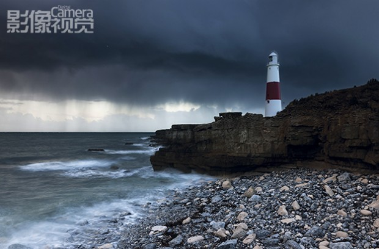
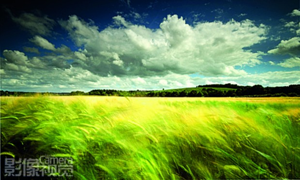
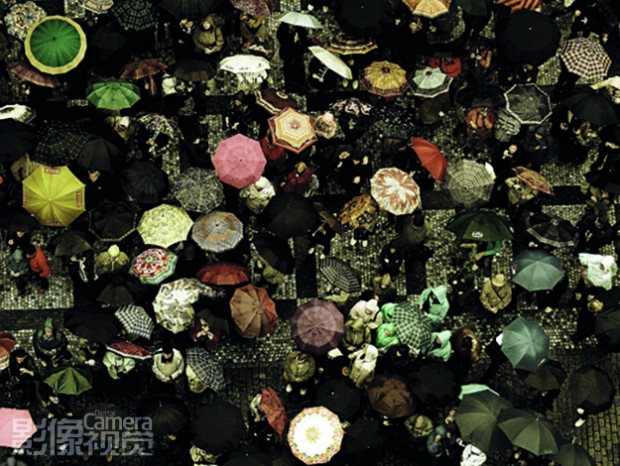
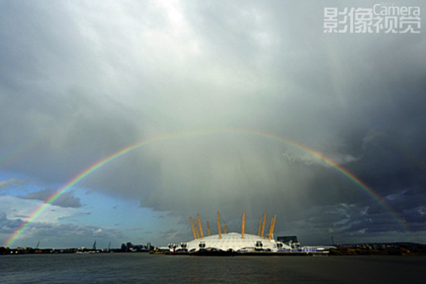
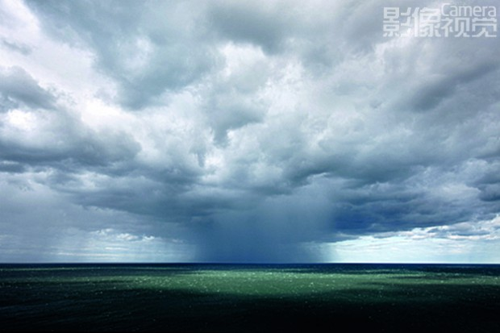

镜头再现万千气象
结合艺术视角来捕捉各种天气，无论你是选择雨、风、阳光或是雪，关键是在画面中为各种天气提供一个展示的舞台。
你可以选择拍摄被暴风雨侵袭的海岸线，或是暴风雪中的城市;又或是选择一个更加平静的画面，比如捕捉有一道彩虹的全景，一个高调的云雾缭绕的黑白风景。
另外，还可以展现一些有关天气的“副产品”，例如雨伞，雨中的水洼，或是夏日炎炎的日光下融化中的冰淇淋。所以在想不到好题材时，带上相机出门四处逛逛，比坐在家中思考更为有效。
总之，发挥你的一切想象力，其所具备的拍摄空间足以显示你的创造力。

要拍摄一个具有规模的场景，找一些有趣的前景。使用长焦镜头压缩画面中的元素，让画面中展现的天气情况看起来比实际上更近，达到身临其境的效果。
拍摄窍门
★ 短时间曝光可以避免我们可能会错过的细节，比如单个的雨滴和冰雹。
★ 更长的曝光可以表现出大风的威力。
★ 保护好自己的装备，比如携带一个防雨罩。
★ 用RAW格式拍摄可以让你在拍摄后尝试使用不同的白平衡设置。
全天候摄影
当天气成为你拍摄的对象时，你要时刻携带着相机，因为你永远无法真正预测到何时才是展示自己能力的最佳时机。国家和地方的天气预报只能为你提供有限的信息，而在工作或旅行的时候让相机紧随于你意味着你可以充分利用所处环境的微妙变化来创作自己的作品。

1长时间曝光可以表现风的吹拂。使用小光圈和低ISO感光度设置。如果在明亮的光线下拍摄，可能需要搭配一块减光镜。

2突破性思维。尝试找一些新的视点，就像摄影师伊恩·韦伯(Ian Webb)所做的那样，从上往下拍摄了布拉格雨中的游客们。

3为了拍摄色彩饱满的彩虹，你可以使用偏振镜。或在Photoshop中的提高“饱和度”或“自然饱和度”来让彩虹更加突出。

4尝试稍微减弱曝光来拍摄雨云，以增强照片中风雨欲来的氛围感。使用广角镜头也能更好地表现即将到来的暴风雨。